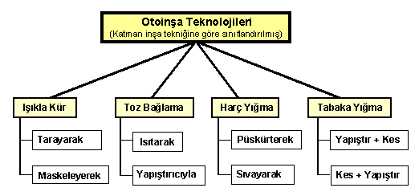
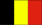
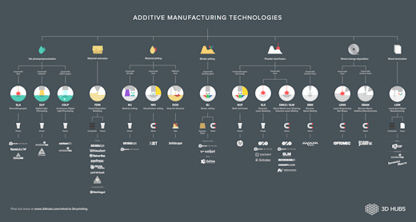

|
|
|
| Ana
Sayfa | Önceki Sayfa | Sonraki
Sayfa |
Otoinþa Teknolojileri:
Katman Ýnþa Tekniðine
Göre Sýnýflandýrma:
Ticari olarak üretilmiþ
bütün otoinþa cihazlarýnýn çalýþma prensibindeki ortak
yön, parçanýn katmanlar halinde inþa edilmesidir. Fakat
katmanlarýn oluþturulma tekniði ve inþa hammaddesi olarak
kullanýlan malzemenin özelliði çok farklý olabilmektedir.
Buna baðlý olarak otoinþa cihazlarý, kullandýðý teknolojiye
göre, Iþýkla Kür, Toz
Baðlama, Harç Yýðma
ve Tabaka Yýðma olarak
dört ana kategori altýnda toplanabilir. Aþaðýdaki þemada
görüleceði üzere her ana kategori ise kendi içinde iki
alt sýnýfa ayrýlmýþtýr:

Not: Þemadaki baþlýklarý týklayarak, direkt açýklama sayfalarýný görebilirsiniz.
|
Cihazýn ticari konumuna
göre sýnýflandýrma:
Ýleriki sayfalarda, açýklanan
her otoinþa teknolojisiyle beraber, sözkonusu teknolojiye
dayalý olarak üretilmiþ cihazlar ve üretici firmalarý
hakkýnda bilgi de bulunmaktadýr. Raporun daha kolay anlaþýlabilir
olmasý için ise, her otoinþa cihazý pazardaki ticari konumuna
göre aþaðýdaki renk kodlamasýna tabi tutulmuþtur: |
| Yeþil:
Ticari olarak üretilen ve satýlan cihaz. |
| Mavi:
Cihaz yerine, bu cihazdan elde edilen ürünler ticaridir. |
| Sarý:
Bu cihaz ve teknoloji henüz test ve geliþtirme aþamasýnda. |
| Kýrmýzý:
Bu cihaz veya teknolojinin üretim ve/veya geliþtirilmesi
durduruldu. |
| Ticari
durumu belirten renk koduna ek olarak, satýrýn sol baþýna
teknoloji ve/veya cihazý geliþtiren kuruluþlarýn bulunduðu
ülkenin bayraðý yerleþtirilmiþtir.
Aþaðýda, bu raporda
ele alýnan cihaz ve teknolojilerin kaynaðý olan tüm
ülke bayraklarý bulunmaktadýr. Ülke isminin saðýnda
parantez içinde ise, bu rapordaki bir tabloda
listelenmiþ olan, ilgili ülkeden kuruluþlarýn ürettiði
farklý otoinþa teknolojilerinin sayýsý verilmiþtir.
 ABD (29)
ABD (29)
 Japonya (13)
Japonya (13)
 Almanya (11)
Almanya (11)
 Ýsrail (3)
Ýsrail (3) |
Ýsveç (3)
 Fransa (2)
Fransa (2)
 Ýngiltere (1)
Ýngiltere (1)
 Ýsviçre (1)
Ýsviçre (1) |
 Singapur (1)
Singapur (1)
Avustralya (1)

Belçika (1) |
2016 itibariyle güncel bilgiler içeren yukarýdakine benzer bir þema:

(yüksek çözünürlükte görüntülemek için týklayýnýz)
Kaynak: www.3dhubs.com/what-is-3d-printing |
| Ana
Sayfa | Önceki Sayfa | Sonraki
Sayfa | |
|